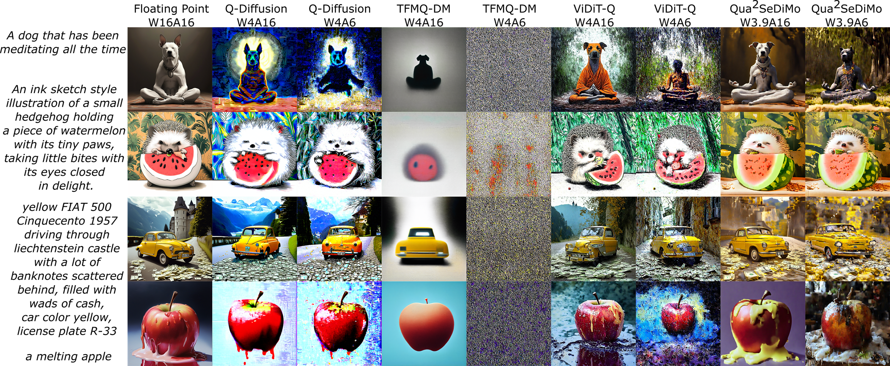

Results on PixArt-Σ. Resolution: 1024x1024.

Diffusion Models (DM) have democratized AI image generation through an iterative denoising process. Quantization is a major technique to alleviate the inference cost and reduce the size of DM denoiser networks. However, as denoisers evolve from variants of convolutional U-Nets toward newer Transformer architectures, it is of growing importance to understand the quantization sensitivity of different weight layers, operations and architecture types to performance. In this work, we address this challenge with Qua2SeDiMo, a mixed-precision Post-Training Quantization framework that generates explainable insights on the cost-effectiveness of various model weight quantization methods for different denoiser operation types and block structures. We leverage these insights to make high-quality mixed-precision quantization decisions for a myriad of diffusion models ranging from foundational U-Nets to state-of-the-art Transformers. As a result, Qua2SeDiMo can construct 3.4-bit, 3.9-bit, 3.65-bit and 3.7-bit weight quantization on PixArt-α, PixArt-Σ, Hunyuan-DiT and SDXL, respectively. We further pair our weight-quantization configurations with 6-bit activation quantization and outperform existing approaches in terms of quantitative metrics and generative image quality.
@inproceedings{mills2025qua2sedimo,
title = {Qua$^{2}$SeDiMo: Quantifiable Quantization Sensitivity of Diffusion Models},
author = {Mills, Keith G. and Salameh, Mohammad and Chen, Ruichen and Hassanpour, Negar Lu, Wei and Niu, Di},
booktitle={Proceedings of the AAAI Conference on Artificial Intelligence},
year={2025},
pages={6153-6163}
}